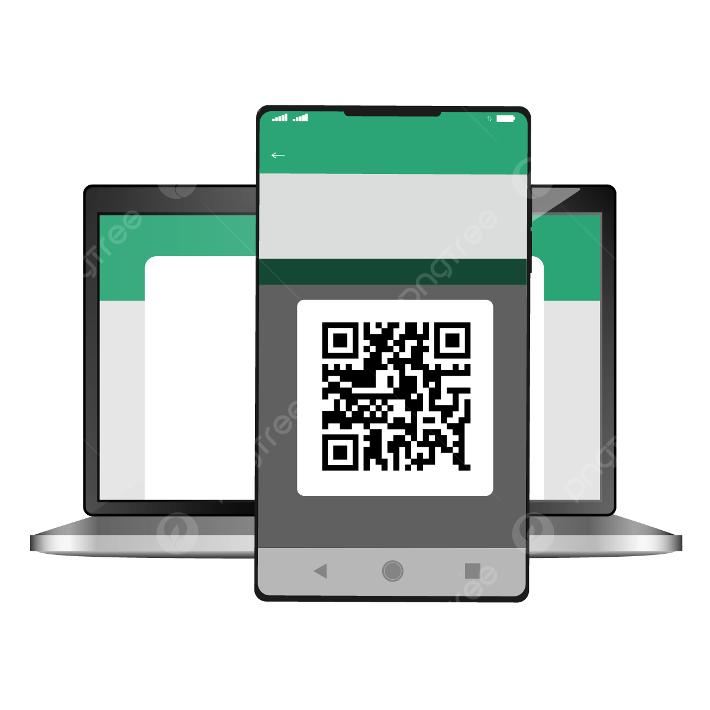

WhatsApp Web
To use WhatsApp on your computer:
1. Open WhatsApp on your phone
2. Tap
Menu
or
Settings
and select
Linked Devices
3.Top on
Link a Device
4.Point your phone to this screen to capture the code
Need help to get started?
